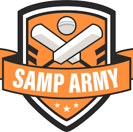
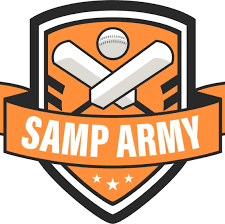
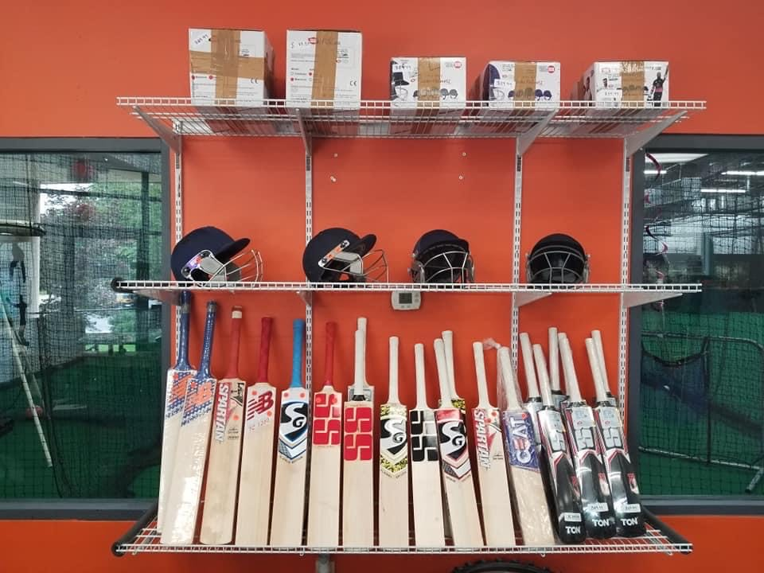

Samp Army Cricket Franchise
Samp Army Sports Complex

Address: 6201 Dailmer Way,
Raleigh, NC 27607
Samp Army Sports Complex is located in Raleigh, North Carolina. It is
an indoor sports complex where sports such as Cricket, Baseball practice
sessions can be held. It can be used from an individual to teams. There
are three full and 2 half lanes, which can be used for Cricket. Also a
open area for Baseball practice with Baseball nets. Complex also has a
bowling machine for Cricket.
Complex also sells Cricket equipments such as bat, gloves, balls, pads,
helmet, stumps, grip and many more.
For any inquiry or to book a lane, call 919-803-6583.
Hours: Mon - Fri: 4pm to 10pm
Sat - Sun: 10am to 5pm